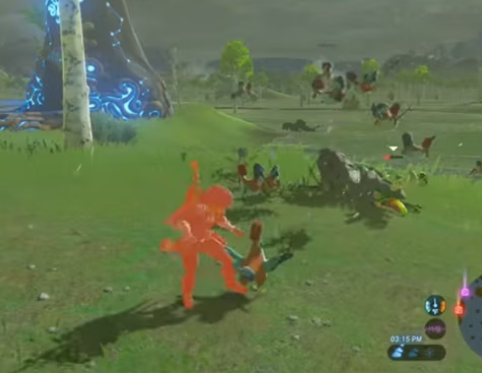

Cuckoo Attack Returning in Breath of the Wild
- A returning feature in The Legend of Zelda: Breath of the Wild comes in the form of the cuckoos attacking Link. This is a hidden mechanic in most (if not all ) Zelda games where if the player does enough damage to the chickens (cuckoos), an event is triggered which causes many Cuckoos to fly down from the sky and attack the player. 
~ Taylor